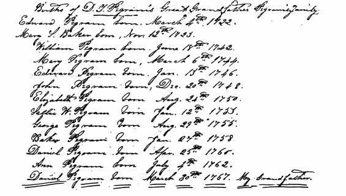

|
|
|||||||||
|
|
7 EDWARD PEGRAM3 (Daniel2, George1) was for a long time considered to be the progenitor of the Pegram family in this country, or at least in Virginia. This traditional but erroneous published account was introduced in the preface of this book, in order to set the record straight before discussing the history of the family. It will not be repeated here. When Daniel Pegram4 and his wife Nancy Hardaway moved to North Carolina, they carried with them the family Bible, (19, 152 ). In it they had recorded the birth dates of his mother and father, Edward Pegram3 and Mary Scott Baker, and the birth dates of all of their children. Additionally, the marriage date of Nancy's parents, Thomas Hardaway Jr. and Agnes Thweatt, was recorded, along with the birth dates of all of their children. These records have been widely distributed and published (6). The whereabouts of the original Daniel Pegram Bible is not known, but the information was recorded in the family Bible of Daniel Theodore Pegram, Edward's3 great grandson, and that Bible is extant. The foregoing records were made available by Mrs. Frances Pegram Weaver of Red Springs, North Carolina, who is the granddaughter of Daniel Theodore Pegram. Before her death, Mrs. C.A. Matthews, sister of Mrs. Weaver, was in possession of the original Theodore Pegram records. They are now (1980) in the possession of Mrs. Weaver's daughter, Mrs. Elizabeth Hope W. Sardeson. The following is a reproduction of the portion of the records from Daniel Theodore Pegram's bible showing birth dates of Edward Pegram3, his wife Mary Scott Baker, and their children.
 Edward Pegram was born in York County, Virginia in 1722, the son of Daniel2 and Sarah Pegram. He died in 1795. He was undoubtedly buried in the Dinwiddie County locale, most likely on the grounds of the plantation where he died. Edward was the third generation of Pegrams in Virginia, and his descendants are rather well catalogued to the present day. Actually to have been the ancestor of so many well known people, there is surprisingly little information on Edward himself. This is partly because of the destruction of official records as will be discussed later. Edward, like his brothers and sisters, was quite young when his parents died. He was only four years of age when his father died, and his mother died a year later. The first record found of Edward Pegram was in his father's will in 1726. He was also named as an heir in the will of his mother in 1727. The next record is that of his apprenticeship, in the Charles City County records of 17 April 1737, as follows:
The Charles City Order Book shows a record of August 1737 that "Edward Pegram, a youth resident in the county." No mention is made of him being an apprentice, although he was indentured the previous April. Edward apparently did not complete the usual apprenticeship, since he married Mary Scott Baker by 1741, The Bristol Parish records show that Edward and Mary's son William was born 18 June 1742, and baptised 4 July of the same year (33). The following is quoted from a letter of 16 February 1892 from Judge WILLIAM E. CLARK6, a great grandson of Edward3 and Mary Scott Baker. It is one of these handed down stories without authentic confirmation, but is included as a matter of record. As with several prior Pegram family reports, he stated that Edward came to America with the Governor of Virginia as Surveyor of the Colony, which we now know is incorrect. He states:
The attitude of the Bakers would not be surprising, since Edward Pegram was apprenticed as a brickmason in 1737, and must have just completed his indenture, if in fact he had, prior to his marriage in 1741. Anyway, it's a good story. On 22 November 1753, the following record was noted:
30 year 1748, the Petitioner in taking up a runaway negro, was obliged to give him several blows, sometimes after which he died; that John Jones, Gent., to whom the said negro belonged, brought suit against the petitioner, and obtained a judgement against him for 40 pounds and praying relief, was offered to house: and the question being put, that the said Petition be received, Resolved in the negative" (6). In 1762 Edward made various seizures belonging to the friends of Whijanock (Quakers) meeting in Dinwiddie County (49). From this one might surmise that Edward was some sort of law officer. On 28 October 1776 the Methodist of Virginia had sent the following memorial to the General Convention of Virginia assembled at Williamsburg:
When in 1780 Francis Asbury - whom John Wesley had appointed with John Coke as coordinate to be Superintendent "over our brethren in America" - traveled through Dinwiddie County, the Methodist were still considered members of the Anglican Church, though they were looked upon with disfavor by many of the conservative clergy. Entertained on September 9 at the home of EDWARD PEGRAM, where he spoke to about 70 people, Asbury wrote in his diary that he "was under great dejection: and spoke with very little life." Sunday he addressed 400 people at Bushnell's Chapel. The following Tuesday Dinwiddie friends presented the preacher a dress of rough Virginia material of which slave's garments were made. Asbury wrote in his diary that the gift was welcome, "as my dress approached raggedness." Deveraux Jarrett - still Rector of Bath Parish, though in disrepute among his brethren because of his too hospitable treatment of a society that was beginning to appear dangerous - gladly received the visitor. "I had some close talk with Mr. Jarrett", Asbury recorded. "He seemed willing to help what he can and to come to the conference." (50). It would appear from the foregoing that Edward Pegram, who allowed the Methodist representative of John Wesley to hold a meeting at his home, was somewhat in sympathy with the then unpopular Methodist religion. It must have had some effect, since many of the Pegrams, down to the present day, are Methodists, though many are Presbyterians and Episcopalians. There is no available information to allow an absolute determination as to whether the home of Edward Pegram, where Asbury visited, was that of Edward3 or that of his son Edward4. It appears more likely that the meeting was held at the home of Edward3. He would have been 58 years of age at the time, and Edward4 would have been 34. Edward' was in Petersburg Town in 1781, and most likely 1780. At the time however, Petersburg was in Dinwiddie County. There can no doubt that Mr. Asbury was successful in establishing the Methodist Religion in this country. This is exemplified, not only by the large number of Methodist members that exist today, but by the number of "Asbury Methodist Churches." John Coke, Asbury's coworker, has also been honored by a number of "Cokesbury Methodist Churches." Edward Pegram and E. Pegram, as well as Baker, George and Daniel, along with 25 other citizens of Petersburg and vicinity, signed a petition to His Excellency the Governor, in September 1781. It was a petition of citizens adverse to the views of those who desire the enforcement of an act prohibiting immigration of certain persons . . . (51). Edward Pegram and E. Pegram were undoubtedly Edward3 and his son Edward4. There was no other Edward Pegram of record, or for that matter an E. Pegram, old enough to sign such a petition. 31 Land records of Dinwiddie County show that Edward Pegram paid taxes on land in the 1787-1794 period, and his estate was taxed in 1796, including some of the same land that he paid taxes on earlier. Edward Pegram3 died in 1795, and this is undoubtedly his tax record. Edward4 paid taxes on land during and after this period, and his tax record is easily identified. The following records concerning Edward Pegram are of interest. There is no proof that they could not refer to Edward4, but, since Edward3 did not die until 1795, since no reference is made to Edward being a Junior, and since Edward4 was in the Revolutionary War and was referred to as Captain, in other instances, it appears most likely that Edward3 was the person involved. Public Service Claim, Dinwiddie County Court Booklet; (Payment of services to the Continental Army or Militia). At a court continued and held at the Courthouse of Dinwiddie County on Saturday the 20th of April 1782, for the adjust. of public claims. Present - John Jones, Thomas Scott, John Jones Esq., and Duncan Rose, Gents.
It would be of considerable interest to know more about the life of Edward Pegram3. In 1737 he was apprenticed to Matthew Harfield. He was married probably in 1741, judging from the birth of his son William in June 1742. During the next few decades he became a gentleman of wealth and stature. He was said to have been an officer in the Virginia Militia. His nephew is quoted by his son George Washington Pegram5 to have said that he was a General (18); but this has not been confirmed, and may not be true. Edward and Mary Scott Baker reared a large family, apparently all of them successful, and some prominent. How did Edward accomplish this? What was the source of his and his family's large land holdings, general affluence and social status? A fire in 1835 destroyed most of the records at the Dinwiddie Courthouse, and Sheridan's Army completed the task. The court order book for 1789 is extant, as well as two surveyor's platt books, showing land surveyed by George and Daniel Pegram in 1810. Patent books in the State Archives Division of the Virginia State Library, in Richmond, are rather complete for Dinwiddie County. The Federal Army of the Potomac destroyed the records in Charles City and Prince George Counties (40). According to Henry Pegram (6) all eighteenth century records of Prince George County were destroyed except for the years 1713-1728, 1759-1760, 1787-1792 and 1794-1824, and possibly a package of old wills. If the records of Prince George and Dinwiddie Counties were extant, we would know much more about Edward Pegram3. Prince George County Deed Book, 1787-1792, page 7, concerns the estate of Robert Boyd, deceased, in account with Charles Duncan, Executor, 1779 through 1786. Among the many names mentioned was that of Edward Pegram. This was some 24 years after the formation of Dinwiddie County from Prince George. Mention of Edward does not indicate that he was a resident of Prince George County at the time. Conversely, records indicate his presence in Dinwiddie County. County lines could possibly have been changed more than once. There is also a possibility that Edward4, son of Edward3 and Mary Scott Baker, could have been the individual mentioned, but there is no indication that he lived in Prince George. (In fact he was known to have lived in Dinwiddie.) Edward's wife, Mary Scott Baker, was the daughter of Colonel Daniel Baker, of whom little is known. Mary Scott Baker's mother was the daughter of Sir Foliad Griffith. She was said to have been disinherited for marrying a commoner (41, 52, 53). After Col. Baker's death his widow married Patrick Oglesby of New York. They had a daughter, Elizabeth, who married William Andrews in New York. William and Elizabeth had a number of children, among them Benjamin, who married Jane Wilkins, 32 and who owned land adjoining that of Major Edward Pegram5 in Dinwiddie County in 1813 (41). They had a son, Wilkins Andrews, who married SUSAN MANSON PEGRAM5 (105), daughter of Baker Pegram4, and granddaughter of Edward Pegram3 and Mary Scott Baker. They were married by the Reverend Peter Wynn on 14 December 1805, thus going full circle, back to the Pegrams of Dinwiddie. Benjamin Andrews and Jane Wilkins had other children as follows (151): Patrick M., m. Mary
Stainback. Mary Scott Baker's mother, after the death of Col. Baker and her marriage to Mr. Oglesby, thus started a whole new generation that returned from New York to Dinwiddie County, Virginia. A number of them married into the Pegram family, as did her daughter, Mary Scott Baker. One wonders about the name Scott in Mary Scott Baker. There were Scott families in Dinwiddie County and they were closely associated, and intermarried with the Pegrams, but what was their relationship to the Bakers, if any? James Scott arrived in Dinwiddie County in 1746, and was said to have married a sister of Edward Pegram3 (41). Mary Scott Baker, born in 1723, would not have been a descendant of this family. There was another Scott family in Dinwiddie, Thomas Scott had a patent on 770 acres of land before James Scott came to Dinwiddie. Nothing is known of Thomas or his descendants. The close Pegram association was with the James Scott branch. There was no indication that the James and Thomas factions of the Scotts were related, although they might well have been. Edward Pegram3 and Mary Scott Baker had the following children:
Each of the above will be presented sequentially. 33 |
||||||||||
|
|
||||||||||
|
| Back | Next | Index | Table of Contents | References | |